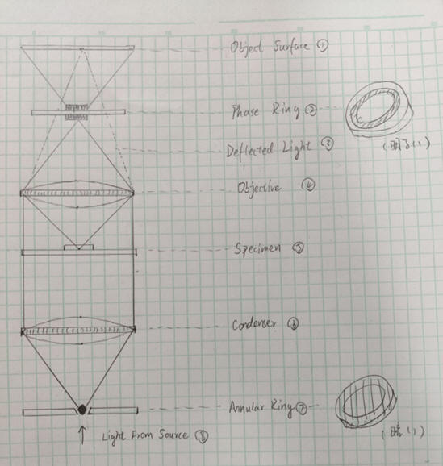
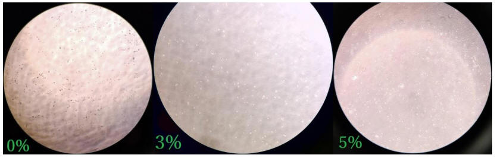
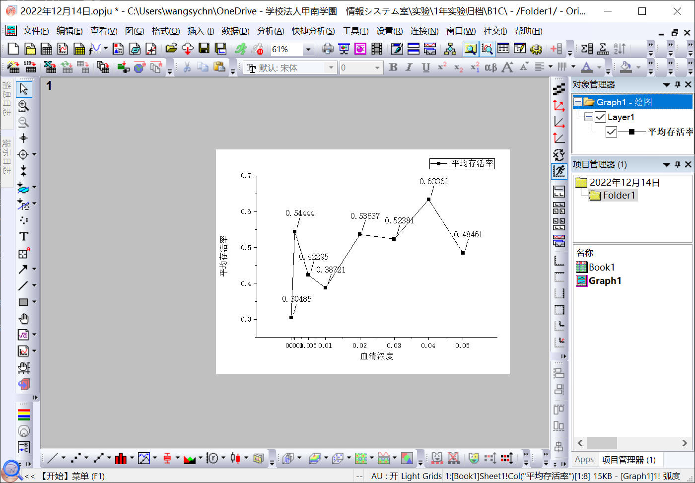
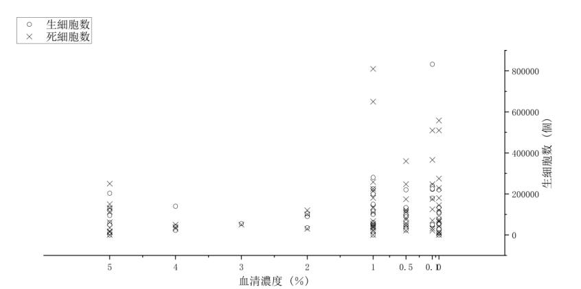
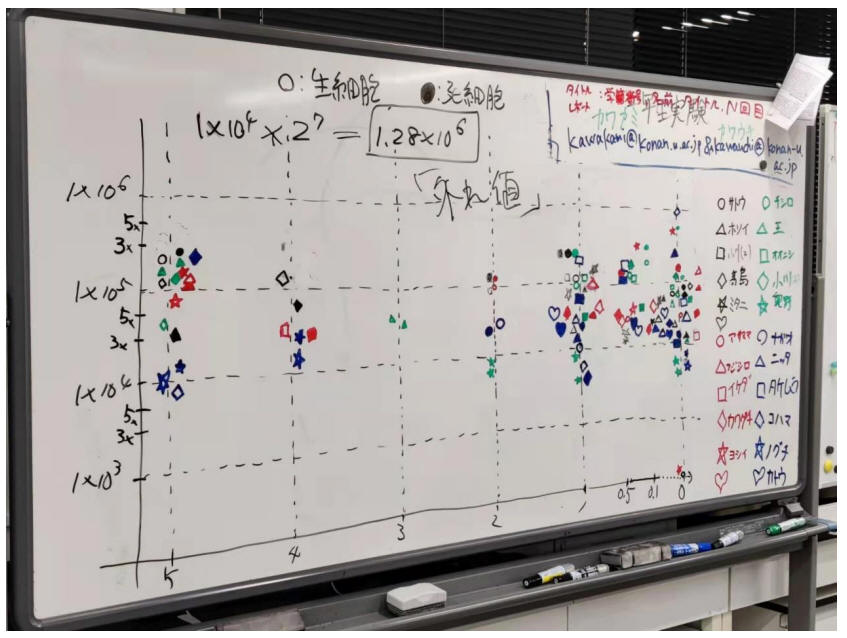

培养细胞实验
分享一下我最近做的一个实验——培养细胞。培养细胞是一种把细胞从生物体中取出来，在人工条件下让它生长的技术。这样可以让我更好地研究细胞的结构和功能，以及它在生命过程中的作用。我对这个实验很感兴趣，因为我想了解不同的细胞类型和培养条件对细胞生长的影响。
我的实验分为三个部分。第一部分是初代培养，也就是把从人体中取出的子宫颈癌细胞（HeLa细胞）放在培养液中，让它附着在培养皿上，并且不断分裂。我用了一些特殊的试剂和工具，比如PBS、胰蛋白酶、培养液、吸液器、计算盘等，来操作和观察细胞。我还用了位相差显微镜，这是一种可以看到透明细胞的显微镜。

我发现HeLa细胞很容易培养，只要给它足够的营养和温度，它就会快速增长。
第二部分是継代培養，也就是把已经培养好的HeLa细胞分散到不同的培养皿中，让它继续生长。我用了不同的血清濃度（0%、3%、5%）来调节培养液的成分，看看它对细胞生长有什么影响。我预计血清濃度越高，细胞生长越快，因为血清可以提供一些重要的营养物质和生长因子。我把不同血清濃度的培养皿放在恒温箱里，一周后再观察。

第三部分是实验结果和分析，也就是把一周后的细胞数和存活率进行统计和比较。我用了一些方法，比如用PBS和胰蛋白酶把细胞从培养皿上分离，用遠心机把细胞沉淀，用计算盘把细胞数目计算，用公式把存活率算出。我还用了Origin
Pro软件，把数据制成了图表，方便观察和对比。

我发现我的预期和实际结果有些出入，血清濃度并不是越高，细胞生长就越快。有些血清濃度很高的培养皿，细胞数目反而很少，存活率也很低。

在那之后，我检查了我制作的图表，发现纵轴应该做成10的次方的形式，而不是这样，这里我通过白板的照片来展示。

我想这可能是因为血清的成分和作用不只是提供营养和生长因子，还有一些其他的影响因素，比如抑制或促进细胞凋亡的物质。
通过这次实验，我学到了很多关于培养细胞的知识和技能。我了解了不同的试剂和工具的作用和使用方法，我掌握了一些基本的操作和观察的技巧，我还学会了如何收集和分析数据，以及如何用图表来展示结果。我觉得这次实验很有趣，也很有挑战。我遇到了一些困难，比如细胞分散不均匀，计算盘不清楚，数据有误差等，但是我都尽力克服了。我还发现了一些意想不到的现象，比如血清濃度和细胞生长的关系，并不是简单的正比例。这让我对细胞的生理机制更加好奇，也更加想要深入地研究它。总之，这次实验让我收获了很多，也让我对培养细胞这个领域更加感兴趣。
|